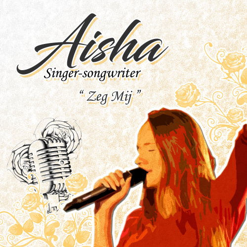
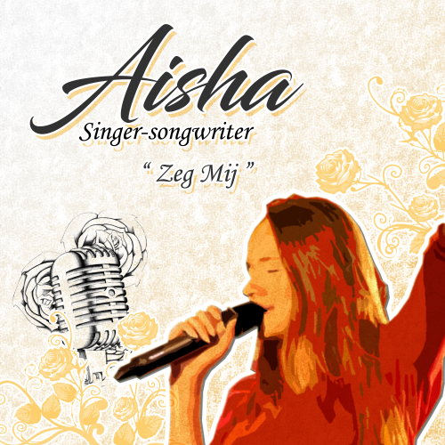

Logo Design
My group member Jordy and me both made a logo for Aisha.
After doing some brand tests on our logo's to Aisha's target audience and input from Aisha herself we both made iterations and ended up with a final result.
I learned from this experience that it's always useful and necessary to ask for as much feedback possible and make iterations according to that.
Album covers


Each member of our group has made an album cover for Aisha, the ones with the red border are made by me.
The first album cover i made is the one on the bottom left, i thought it looked cool, interesting and a little bit flashy that would attract the attention of her target audience. The next one i made is more of an iteration on the previous one where i changed the triangles into circles for a more curvy feel.
The 3rd cover i made was a new concept and i also approached this design differently, i started off by listening to Aisha's "Zeg mij" song again and visualizing images that i thought about while listening.
Immediately while listening i thought about a girl laying down in the clouds thinking about love.
Here you can see the different iterations i made for this album cover.

 


Business Cards

The favourite colour of these iterations was the pink one.
Aisha had one last request and that was if we could put a picture of her on the business card so it would be more personal.
Ofcourse we wanted to fulfill this request, so i made the final business card with her picture and this is the result.

Each member of our group made a business card for Aisha, this is the one i created as my first design.
The feedback we got from Aisha and her target audience was that this was the favourite since it was really simplistic and clear but it would be better in a different colour to make it more readable.
So i made this design into different colour iterations which we then would let Aisha and her target audience decide which one is the best.
Hologram Videos


During the sprints i have already made some videos that could be used as a hologram with our prisma.
The first 2 are pretty basic showing Aisha's logo in a fancy way, the 3rd one is a cube showing some of the album covers we made and the last one is my last album cover visualized into an animation through after effects.
By making these videos i got more experience in using after effects and video editing programms like camtasia.
Also through making the previous hologram videos i have got a little handy in making any video into a video our prisma can use which is useful for the next sprint.
In the next sprint we are gonna focus more on making holograms that fit more to Aisha's style.